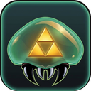
The Super Metroid + A Link to the Past randomizer, with the tracker on the second screen and online races, ladders and daily challenges.
AYN Thor · Android · Nintendo 3DS · Linux handhelds · Linux, Windows and macOS
SMZ3 mixes both games into one: items from each are shuffled across both worlds, and doors take you from Zebes to Hyrule and back. The tracker reads the game live, so you never mark anything by hand.
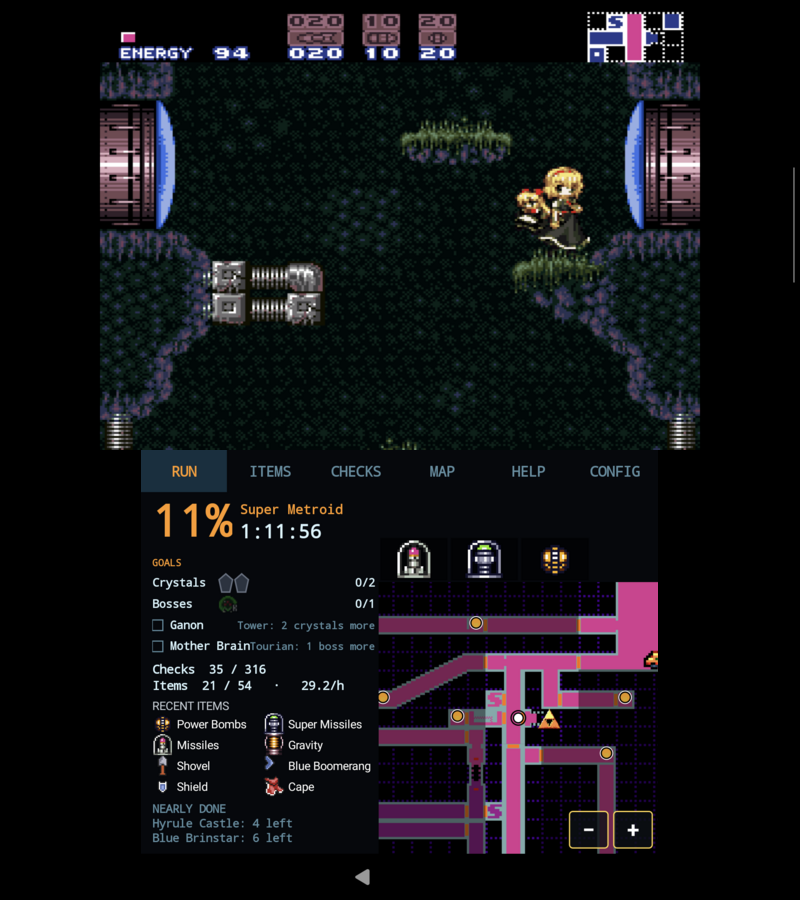
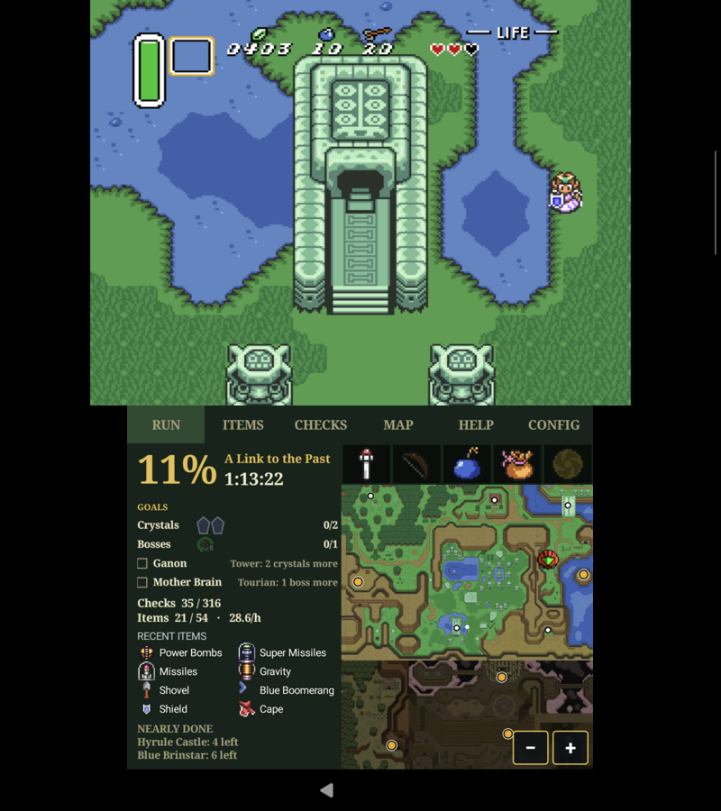
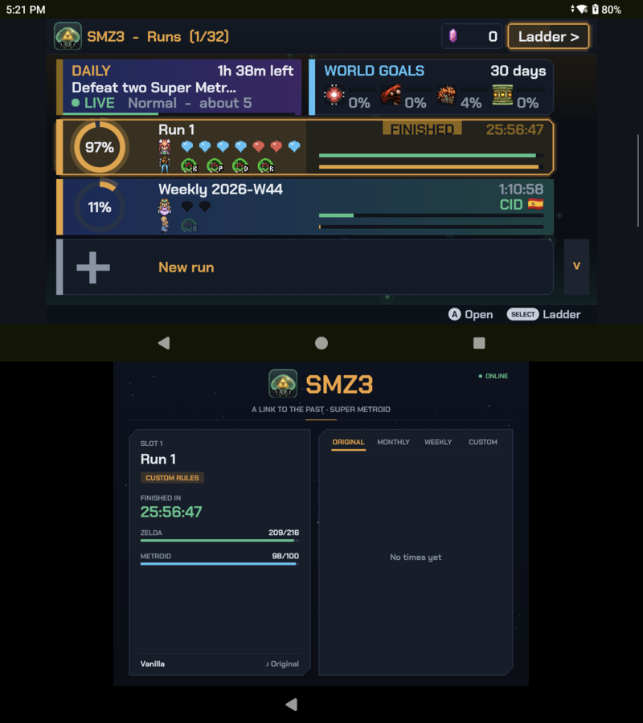
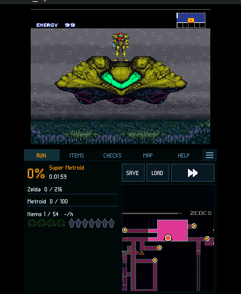
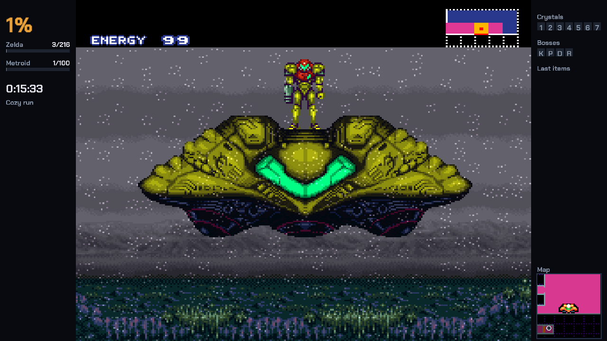
Everyone gets the same seeds, so there is always a time to beat. Every finish carries a proof of the checks made along the way, and the server checks it against the seed's logic before it goes on the table.
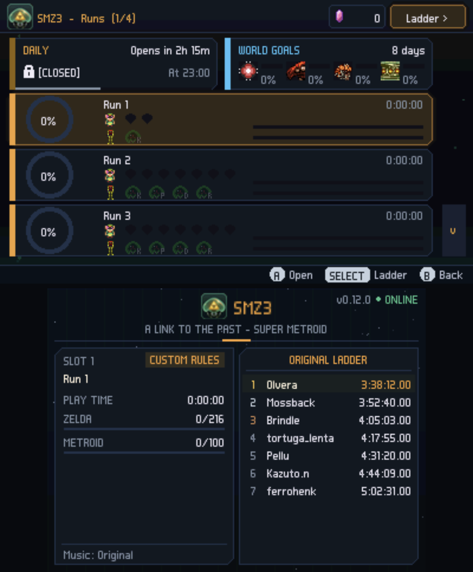
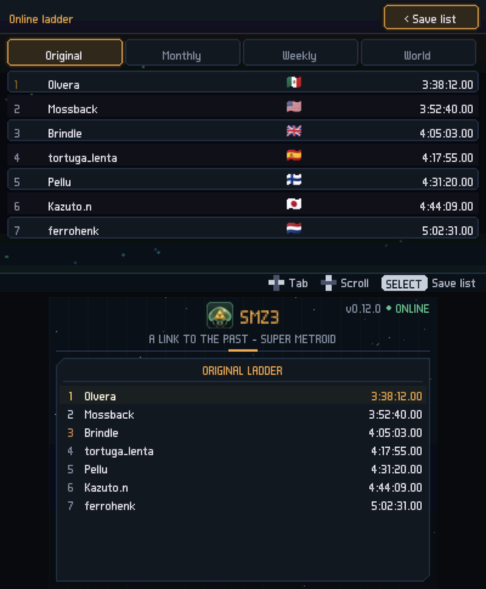
Three windows a day, four hours each. Everyone in a window gets the same start and one goal, like "defeat two Super Metroid bosses". One attempt, real time, no save states, with hints coming out on a schedule.
A short run on a new seed every Monday: two crystals open Ganon's Tower, one boss opens Tourian.
One fixed seed per month, the same for everyone, with its own table of best times.
Runs on the default rules go on the online ladder, on the device and at smz3-universe.duckdns.org.
Every month the players share a few goals, like "defeat 30 Kraids". Everyone who helped enough gets paid in rupeergies when the month ends.
2 to 8 players on any device, in public rooms or private ones with a code. Draft is a quick start with a random goal; Championship is a longer run, with a note when a rival finds a big item or beats a boss, and text chat.
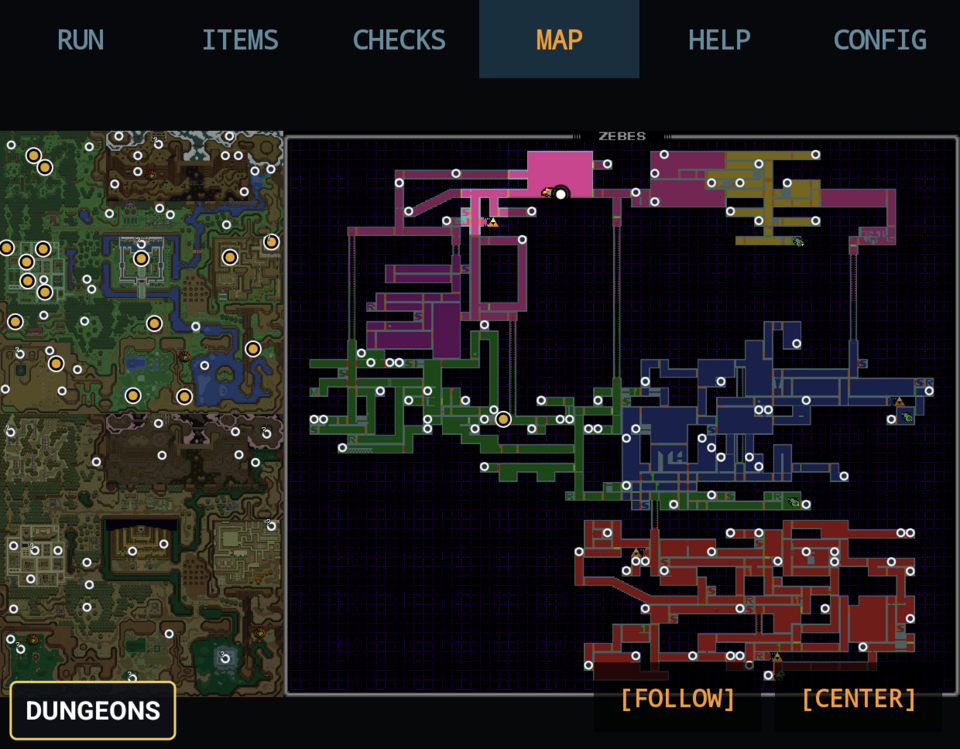
Checks you can reach in logic are marked, and the map can follow you as you play. Inside a Zelda dungeon you get the game's own map of it, read from your ROM, with the keys still to take.
Hints are up to you: all of them, none, or a few you spend when you're stuck.
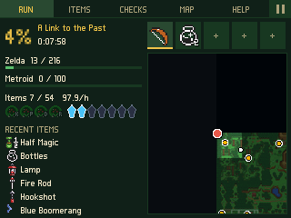
On the Thor and the 3DS, tap a row over the map to equip a Zelda item, switch a beam, or pick missiles, supers or power bombs.
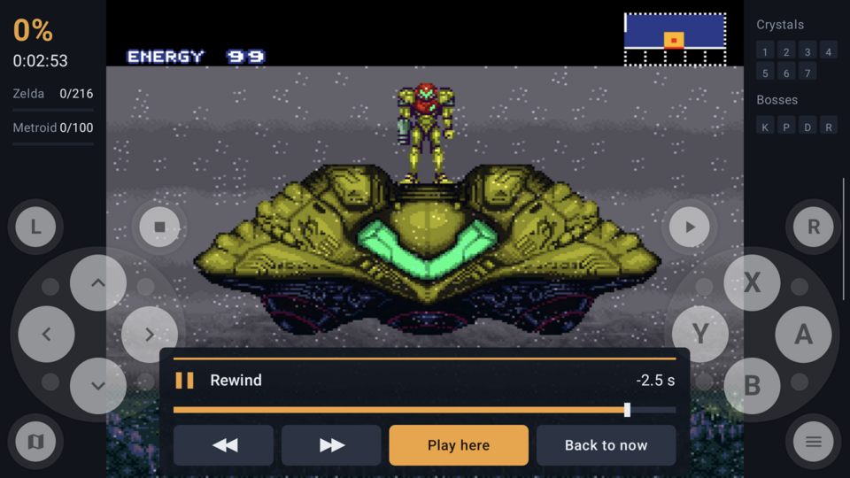
Hold a button and the game goes back, up to a minute on the Thor and PC. Let go to stop on a frame and play on from there. Online runs never rewind.
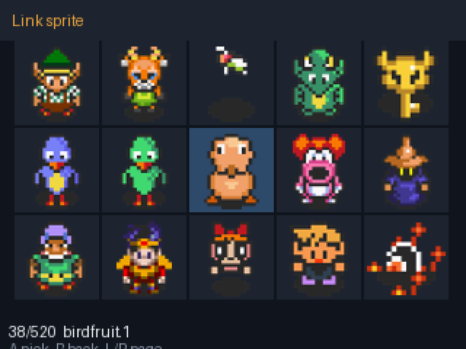
Pick a community sprite per run, or let the run pick one at random.
The generator is built in: a C port of SMZ3Randomizer, checked seed by seed against the original. A new seed takes a second, from your own two ROMs, with no connection needed.
| Cozy | Keys shuffled in Zelda only, easy wall jumps, dark rooms lit, save states and rewind on. |
|---|---|
| Original | The default rules. These runs can go on the online ladder. |
| Custom | Every option of the web generator: item placement, keysanity, logic tweaks, starting items, plando. Save a setup and pick it again later. |
Pick the game on the first screen. Each one has its own runs, tracker, ladders, daily challenge and races.
Both games in one seed, as above.
Super Metroid alone, plus Map Rando runs, which rebuild the whole map the way SM races play it.
Zelda alone, with the options its community plays: Inverted, Retro, hunt goals, glitched logic and boss shuffle.
You need your own ROMs: Super Metroid (JU) and A Link to the Past (Japan v1.0). Then grab the file for your device from the latest release.
| AYN Thor, Android | SMZ3-android-arm64.apk |
|---|---|
| Nintendo 3DS | SMZ3-3ds.cia (FBI) or SMZ3-3ds.3dsx (Homebrew Launcher) |
| ROCKNIX, Knulli | SMZ3-ports-aarch64.zip |
| Linux | SMZ3-x86_64.AppImage |
| Windows | SMZ3-windows-x64.zip |
| macOS | SMZ3-macos-intel.tar.gz (Apple silicon through Rosetta) |
Step by step for every device: installation guide.